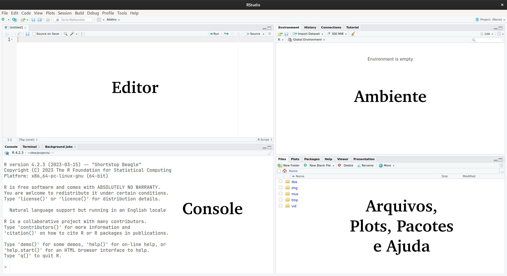
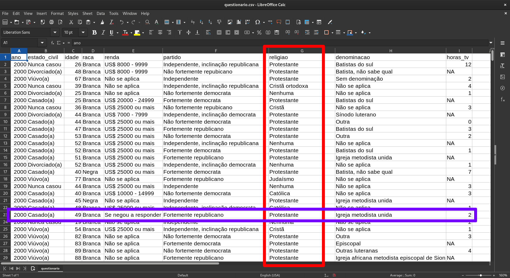

[1] 275R e RStudio
Aula 1
Bruno Montezano
Grupo Alliance
Programa de Pós-Graduação em Psiquiatria e Ciências do Comportamento
Universidade Federal do Rio Grande do Sul
29 de abril de 2023
Objetivos do curso
Desenvolver habilidades básicas no manejo e visualização de dados em R
Aprender conceitos básicos de programação
Introduzir conceitos e rotinas de análise de dados em saúde
Quem sou eu?
Bruno Montezano
Psicólogo
Mestrando em Psiquiatria e Ciências do Comportamento
Integrante do grupo de pesquisa Alliance
Pesquisa
- Psiquiatria de precisão
- Aprendizado de máquina
- Transtorno bipolar
- Suicídio
Logística do curso
Como será realizado?
- Sete aulas virtuais
- Plataforma Google Meet
- Segunda às 19h
- Duração média: 45min
Materiais: https://brunomontezano.github.io/r-workshop/
Conteúdo de hoje
O que é o R e por que usá-lo?
Visão geral do RStudio
Comandos básicos do R
- Vetores
- Data frames
- Funções
- Pacotes
- Ajuda
Materiais
Todos os materiais do curso estarão no site do curso.
- Slides e códigos usados para gerar os slides
- Links com outros materiais sugeridos
Se algo não estiver funcionado no site, me enviem um email!
Cronograma de aulas
- R e RStudio (17/04/2023)
- Manipulação de dados (24/04/2023)
- Visualização de dados (08/05/2023)
- Análise descritiva (15/05/2023)
- Inferência estatística (22/05/2023)
- Modelos de regressão (29/05/2023)
- Tópicos avançados (05/06/2023)
Lembrando que todas as aulas serão realizadas às 19h do horário de Brasília.
Por que aprender análise quantitativa de dados?
Vocês vão ler pesquisa quantitativa
- Interpretação
- Avaliação
Vocês podem fazer pesquisa quantitativa
- Análise
- Comunicação
Formatação dos slides
Negrito indica um termo importante.
Itálico indica ênfase ou instruções para clicar com o mouse.
- Exemplo: “Clique em Arquivo > Salvar como…”.
Código representa o código em R para ser digitado ou teclas para realizar ações.
- Exemplo: “Pressione
Ctrl-Ppara abrir a janela de impressão”.
Os blocos de código são código de fato executado no R.
Por que usar R?
R é uma linguagem de programação construída para computação estatística.
Vamos supor que vocês já tenham domínio no Excel, SPSS, Stata, ou SAS, por quê usar R?
- R é gratuito, então não precisamos de licença
- R tem uma grande comunidade para pacotes e suporte
- R consegue trabalhar com praticamente qualquer formato de dado
- R facilita o processo de replicação e reprodutibilidade
- R é uma linguagem, então é capaz de fazer quase tudo (vide os slides e o site do curso)
- R é parecido com outras linguagens de programação (Python, Julia, etc)
RStudio
O RStudio é um ambiente de desenvolvimento integrado (IDE) para facilitar nossa vida.
- Organização do código, saídas e plots
- Autocompletar e destacar o código
- Ajuda a visualizar os dados e objetos
- Habilita integração de código em R em documentos com Quarto e RMarkdown
- Artigos
- Livros
- Apresentações
- Relatórios
- Websites e blogs
Interface do RStudio
Vamos abrir o RStudio e ir em Arquivo > Novo Arquivo > R Script.
Editando e executando código em R
Podemos executar (rodar) nosso código de diversas formas:
Selecionar linhas no Editor e clicar em Executar no topo ou pressione
Ctrl+Enterou⌘+Enterpara rodar a seleçãoCom o seu cursor (
|) na linha que você quer executar, pressioneCtrl+Enterou⌘+Enter. Notem que o cursor se move para a próxima linha, para que possamos rodar vários códigos em sequênciaEscreva linhas individuais no Console e pressione
Enter
O Console vai mostrar as linhas que você rodou seguido pela saída.
R como calculadora
No Console, vamos digitar 111 + 222 + 333 e pressionar Enter.
O [1] na saída indica o índice numérico do primeiro elemento da linha.
Funções e Ajuda
sqrt() é um exemplo de função do R.
Se nós não soubermos o que sqrt() é, podemos digitar ?sqrt no Console e ver a aba de Ajuda na direita.
Argumentos são as entradas de uma função. Nesse caso, o único argumento para sqrt() é x, que pode ser um número ou um vetor de números.
Arquivos de ajuda provém documentação em como usar as funções e o que a função retorna.
Criando objetos
R armazena tudo como um objeto, incluindo dados, funções, modelos, e saídas.
A criação de um objeto pode ser feita usando o operador de atribuição: <-
Operadores como o <- são funções que parecem símbolos mas geralmente ficam entre argumentos (números ou objetos) ao invés de ter eles entre () como na função sqrt(x)
Nós fazemos contas matemáticas com operadores, por exemplo, x + y.
+ é o operador de adição. Mas temos outros operadores matemáticos:
-: subtração*: multiplicação/: divisão^: potenciação%%: módulo (resto da divisão)
Chamando objetos
Nós podemos mostrar ou “chamar” um objeto através do seu nome.
Dicas para nomear objetos:
- Não pode iniciar com números
- Sugiro usar nomes em letra minúscula
- Sugiro usar
.ou_para dividir palavras - Usem nomes informativos
- Evitem o uso de caracteres especiais
Usando objetos
Você pode tratar o nome do objeto como se ele fosse os valores armazenados no próprio objeto.
Criando vetores
Um vetor é uma série de elementos, como números, por exemplo.
Nós podemos criar um vetor usando a função c() que significa “combinar”.
Atribuir em um nome já existente sobrescreve esse objeto.
Você pode usar um vetor como argumento para várias funções.
Classes
Os vetores podem assumir três classes principais no R.
Podem ser de caractere (ou string):
Lembrando que os vetores podem ter um único elemento, como o vetor_numerico criado acima.
Indexando vetores pela posição
Quando temos vetores de mais de um elemento, pode ser interessante acessar elementos específicos. Para isso, podemos usar os colchetes ([]).
vetor_exemplo <- c(2, 13, 22, 95)
vetor_exemplo[c(1, 3)] # Dessa forma, extraímos apenas o primeiro e o terceiro elemento[1] 2 22animais <- c("Gato", "Cachorro", "Vaca", "Zebra", "Gorila", "Avestruz", "Cabra")
animais[3:5] # Extrair apenas do elemento 3 até o elemento 5[1] "Vaca" "Zebra" "Gorila"[1] "Cachorro"O operador dois pontos (:) gera um vetor usando a sequência de números inteiros do primeiro até o segundo argumento. 3:5 equivale a c(3, 4, 5).
Indexando vetores por expressões
Temos nosso vetor de exemplo:
Podemos querer extrair elementos de um vetor a partir de alguma condição, na forma de expressões lógicas.
Existem vários outros operadores lógicos:
==: igual a!=: não é igual a>,>=,<,<=: menor que, menor que ou igual a, etc%in%: usado para checar igual a um entre vários valores
Combinando expressões lógicas
Podemos combinar mais de uma condição com os seguintes operadores:
&: ambas condições precisam ser respeitadas (E)|: pelo menos uma condição precisa ser respeitada (OU)!: inverte uma condição lógica (TRUEviraFALSE,FALSEviraTRUE)
[1] 13[1] 2 13 22 95[1] 2 13Agora, vamos dar uma olhada em outra estrutura de dados, os data frames!
O que é um data.frame?
Um data frame é uma tabela na qual cada coluna contém valores de uma variável e cada linha contém uma observação. Estrutura de dados mais comum em saúde.
- Toda coluna possui um nome
- Toda coluna possui valores de mesmo tipo
- Cada coluna deve conter o mesmo número de linhas de dados
- Cada linha deve conter o mesmo número de colunas de dados

Criando um data.frame
Vamos criar um data.frame no R com cinco variáveis e quatro observações.
df_aula <- data.frame(
nome = c("Bruno", "Marcos", "Pedro", "José"),
idade = c(18, 22, 25, 21),
profissao = c("Psicólogo", "Professor", "Jogador de futebol", "Bombeiro"),
tem_namorada = c("Sim", "Sim", "Não", "Sim"),
gosta_de_r = c("Sim", "Não", "Não", "Não")
)
df_aula nome idade profissao tem_namorada gosta_de_r
1 Bruno 18 Psicólogo Sim Sim
2 Marcos 22 Professor Sim Não
3 Pedro 25 Jogador de futebol Não Não
4 José 21 Bombeiro Sim NãoNa próxima aula, vamos aprender a carregar nossos próprios dados para dentro do R!
Indexando um data.frame
Diferente dos vetores, que são objetos unidimensionais, os data frames possuem duas dimensões.
Nesse caso, vamos usar os colchetes ([]) para indexar a base na forma: objeto_do_dataframe[linha, coluna].
| nome | idade | profissao | tem_namorada | gosta_de_r |
|---|---|---|---|---|
| Bruno | 18 | Psicólogo | Sim | Sim |
| Marcos | 22 | Professor | Sim | Não |
| Pedro | 25 | Jogador de futebol | Não | Não |
| José | 21 | Bombeiro | Sim | Não |
Indexação e colunas no data.frame
Também podemos indexar a partir de expressões lógicas assim como nos vetores. Para isso, fazemos uso do operador $.
nome idade profissao tem_namorada gosta_de_r
1 Bruno 18 Psicólogo Sim Sim
2 Marcos 22 Professor Sim Não
4 José 21 Bombeiro Sim NãoPacotes
Pacotes são conjuntos de funções ou dados que podem adicionar novas funcionalidades no R.
Instale uma vez!

install.packages("lampada")Use variás vezes!
library(lampada)Instalando o pacote dados
O pacote dados disponibiliza diversas bases de dados para aprendizado. E a melhor parte, são todas traduzidas para português!
E então carregamos com a função library() para usar os dados disponibilizados:
# A tibble: 24 × 5
filme orcamento bilheteria_eua_canada bilheteria_outros_pa…¹
<chr> <dbl> <dbl> <dbl>
1 Toy Story - Um Mundo … 30000000 191796233 181757800
2 Vida de Inseto 120000000 162798565 200460294
3 Toy Story 2 90000000 245852179 251522597
4 Monstros S. A. 115000000 289916256 342400393
5 Procurando Nemo 94000000 339714978 531300000
6 Os Incríveis 92000000 261441092 370165621
7 Carros 120000000 244082982 217900167
8 Ratatouille 150000000 206445654 417280431
9 WALL-E 180000000 223808164 297503696
10 Up - Altas Aventuras 175000000 293004164 442094918
# ℹ 14 more rows
# ℹ abbreviated name: ¹bilheteria_outros_paises
# ℹ 1 more variable: bilheteria_mundial <dbl>Tarefa de casa
- Dê uma olhada no site do curso
- Crie um vetor de 1 a 25 e armazene em uma variável de nome
sequencia- Lembre-se do operador
:
- Lembre-se do operador
- Crie um vetor de caractere de dois elementos com seu nome e último nome (chamado
nome_completo) e extraia seu sobrenome usando[] - Filtre a base
pixar_bilheteriado pacotedadose extraia apenas os filmes que tiveram orçamento menor que 100 milhões- Lembre-se do
$, do<, do[]e da funçãolibrary()
- Lembre-se do
Dica: ChatGPT
O ChatGPT é um chatbot que pode ajudar na aprendizagem de programação
Ele pode responder perguntas sobre sintaxe, funcionalidades e solução de problemas no R
Você pode utilizar o pacote gptstudio para auxiliar nos códigos, gramática dos documentos, ou para comentar seu código no RStudio.